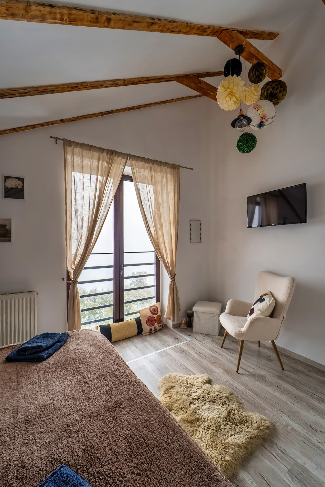
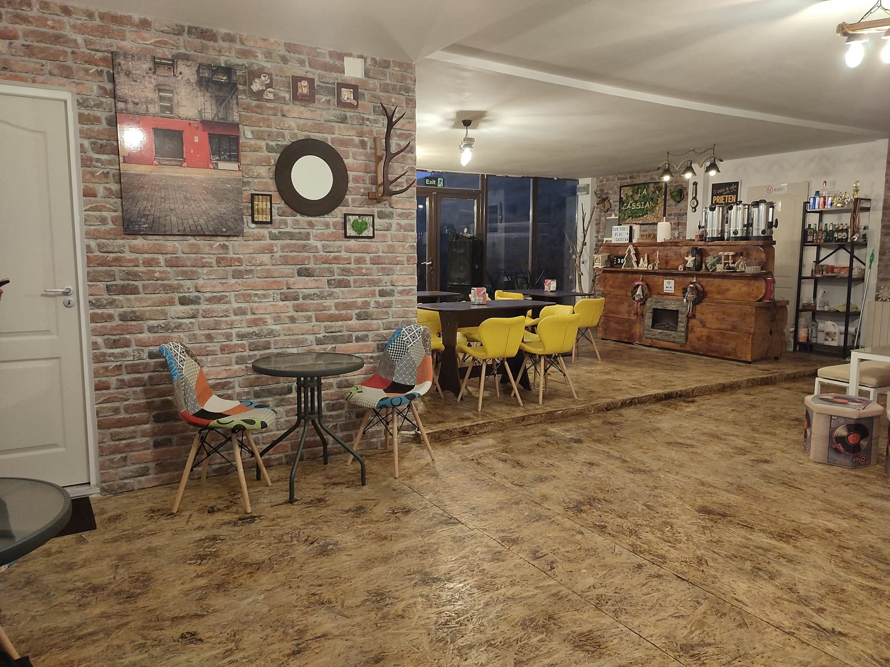

Galerie Foto




Stațiunea Pasul Vâlcan, Vulcan, jud. Hunedoara
Rezervă telefonicCabana La Cassian vă oferă confort și liniște în inima munților, în Stațiunea Pasul Vâlcan. Ideală pentru relaxare, schi sau escapade în natură, cabana dispune de 6 camere moderne, fiecare cu baie proprie și facilități premium pentru un sejur fără griji.
2000 lei/noapte
Decembrie – Martie
1500 lei/noapte integral (aprox. 100 lei/persoană)
Aprilie - Noiembrie
300 lei/noapte aprilie-noiembrie sau 400 lei/noapte decembrie - martie
350 lei/noapte aprilie-noiembrie sau 500 lei/noapte decembrie -martie
Cabana La Cassian îmbină confortul modern cu atmosfera autentică de munte, oferind oaspeților facilități complete pentru relaxare, socializare și activități recreative în orice sezon.
La parterul cabanei se află un bar modern, cu o capacitate de aproximativ 30 de locuri, ideal pentru seri relaxante, socializare și momente petrecute alături de familie sau prieteni.
Oaspeții beneficiază de acces la o bucătărie complet utilată, perfectă pentru pregătirea meselor într-un cadru confortabil și primitor.
Pentru pasionații de sporturi de iarnă și aventură, punem la dispoziție, contra cost, un centru de închirieri echipamente sportive, inclusiv schiuri, plăci snowboard și sănii.
La Cabana La Cassian, experiența nu se oprește la cazare. Într-un decor montan liniștit și reconfortant, oaspeții se pot bucura, contra cost și cu programare, de servicii premium dedicate relaxării, recuperării și stării de bine.
Relaxare completă într-un jacuzzi profesional, ideal după drumeții, off-road sau zile petrecute pe pârtie. O experiență premium într-un cadru intim și liniștit.
Bucură-te de confort și revitalizare prin terapia cu infraroșu, perfectă pentru relaxare musculară, recuperare și echilibru.
La cerere, oferim sesiuni personalizate de nutriție, masaj, terapie Thai și chiropractică, într-o abordare orientată spre relaxare, mobilitate și stare generală de bine.
La cerere, organizăm experiențe memorabile în Stațiunea Pasul Vâlcan și împrejurimi, alături de ghizi locali.
Descoperă drumuri montane spectaculoase, peisaje sălbatice și aventură autentică în inima munților. Excursiile se organizează contra cost, cu programare în prealabil.
Explorați traseele montane din zonă în siguranță, alături de ghizi locali care cunosc cele mai frumoase locuri și puncte panoramice. Excursiile se organizează contra cost, cu programare în prealabil.


Pentru rezervări rapide, contactați-ne telefonic sau pe WhatsApp.
Cabana La Cassian oferă cazare premium în Pasul Vâlcan, fiind alegerea ideală pentru relaxare, natură și aventură montană. Dispunem de jacuzzi profesional și saună cu infraroșu disponibile contra cost, perfecte pentru relaxare după trasee montane sau ski. Organizăm trasee offroad și trasee montane ghidate în zona Vulcan – Pasul Vâlcan. Cabana dispune de bar modern cu aproximativ 30 de locuri, bucătărie proprie pentru turiști și centru de închirieri articole sportive: schiuri, plăci snowboard și sănii. La cerere oferim și servicii premium de nutriție, terapie Thai și chiropractică.
Cabana La Cassian poate fi închiriată integral pentru grupuri, familii sau evenimente private, într-un cadru relaxant și modern în Pasul Vâlcan.
Capacitatea cabanei este de aproximativ 15 persoane, ceea ce înseamnă un cost foarte avantajos de aproximativ 100 lei/persoană/noapte pentru grup complet.
Cabana dispune de:
✅ 4 camere duble
✅ 2 camere triple
✅ Posibilitate pat pliabil extra la cerere
✅ Bucătărie complet utilată
✅ Bar modern la parter
✅ Jacuzzi profesional și saună cu infraroșu
✅ Zonă ideală pentru relaxare și activități montane
Tarife orientative pentru închiriere integrală:
🔥 Decembrie – Martie: 2000 lei/noapte
🌿 Restul anului: 1500 lei/noapte